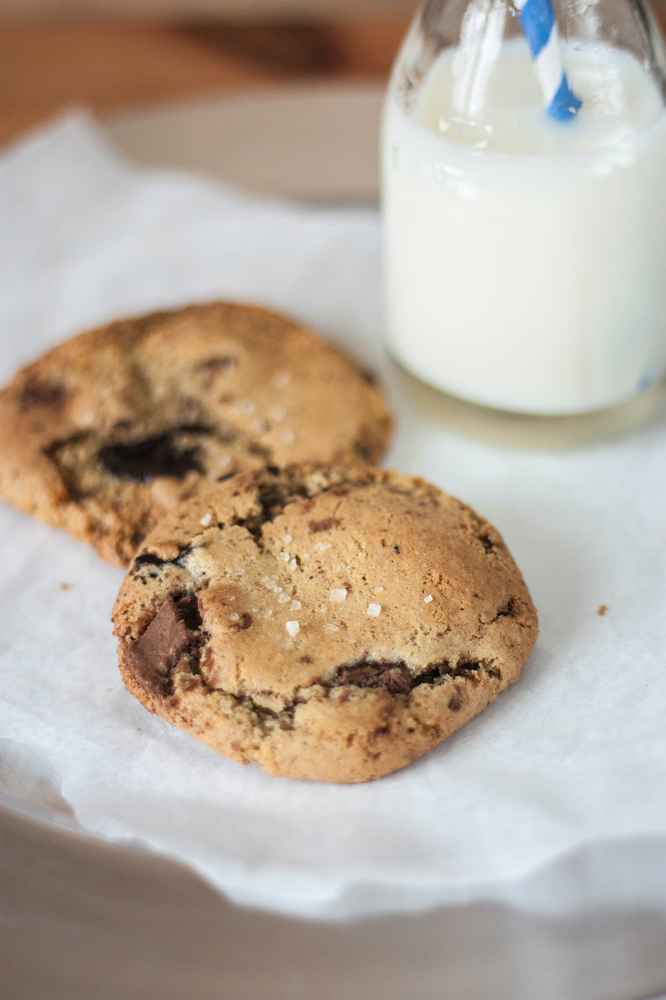

Food Station
Today most search dish

Pizza
The modern pizza was originally invented in Naples, Italy but the word pizza is Greek in origin,
derived
from the Greek word pēktos meaning solid or clotted. The ancient Greeks covered their bread with
oils, herbs
and cheese. The first major innovation that led to flat bread pizza was the use of tomato as a
topping. It
was common for the poor of the area around Naples to add tomato to their yeast-based flat bread, and
so the
pizza began.
While it is difficult to say for sure who invented the pizza, it is however believed that modern
pizza was
first made by baker Raffaele Esposito of Naples. In fact, a popular urban legend holds that the
archetypal
pizza, Pizza Margherita, was invented in 1889, when the Royal Palace of Capodimonte commissioned the
Neapolitan pizzaiolo Raffaele Esposito to create a pizza in honor of the visiting Queen Margherita.
Of the
three different pizzas he created, the Queen strongly preferred a pie swathed in the colors of the
Italian
flag: red (tomato), green (basil), and white (mozzarella). Supposedly, this kind of pizza was then
named
after the Queen as Pizza Margherita.
recipies
Most popular dish
Cookies
Cookies are most commonly baked until crisp or just long enough that they remain soft, but some
kinds of cookies are not baked at all. Cookies are made in a wide variety of styles, using an array
of ingredients including sugars, spices, chocolate, butter, peanut butter, nuts, or dried fruits.
The softness of the cookie may depend on how long it is baked.
A general theory of cookies may be formulated this way. Despite its descent from cakes and other
sweetened breads, the cookie in almost all its forms has abandoned water as a medium for cohesion.
Water in cakes serves to make the base (in the case of cakes called "batter"[8]) as thin as
possible, which allows the bubbles – responsible for a cake's fluffiness – to better form. In the
cookie, the agent of cohesion has become some form of oil. Oils, whether they be in the form of
butter, vegetable oils, or lard, are much more viscous than water and evaporate freely at a much
higher temperature than water. Thus a cake made with butter or eggs instead of water is far denser
after removal from the oven.
Oils in baked cakes do not behave as baking soda tends to in the finished result. Rather than
evaporating and thickening the mixture, they remain, saturating the bubbles of escaped gases from
what little water there might have been in the eggs, if added, and the carbon dioxide released by
heating the baking powder. This saturation produces the most texturally attractive feature of the
cookie, and indeed all fried foods: crispness saturated with a moisture (namely oil) that does not
sink into it.